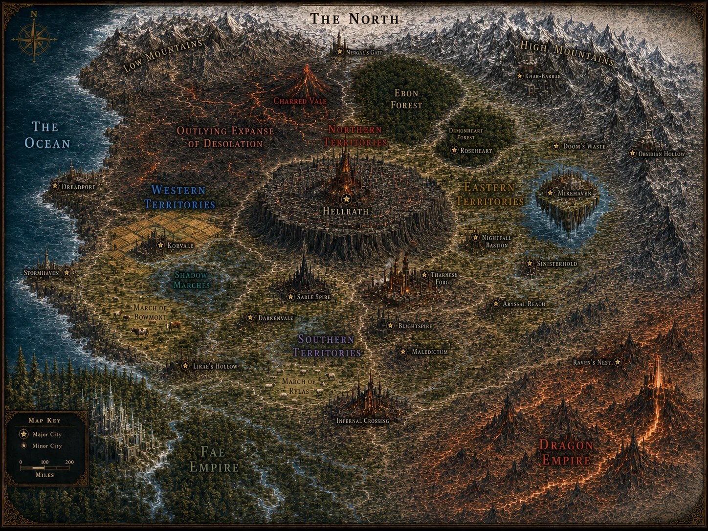

DEMON EMPIRE · FULL SPOILERS
DEMON EMPIRE
A Traveller’s Guide to Fairyland.
Open each section to explore the complete geography, politics, peoples, cities and customs recorded in Louisa Webb’s world guide.
← Return to Political Realms
General Geography
The Demon Empire is vast, old and extraordinarily varied. Anyone expecting nothing but lava, horned Demons and ominous castles is likely to be disappointed, although the Empire possesses an impressive quantity of all three.
The Empire borders the North beyond its great northern mountain ranges, the Fae Empire to the southwest, and the Dragon Empire to the south and southeast. Its western boundary is the ocean. At Infernal Crossing, Demon, Fae and Dragon territory converge, making the city one of the most politically and economically important border centres in Fairyland.
Its territory is conventionally divided into the Northern, Western, Southern and Eastern Territories, with Hellrath sitting almost at their meeting point. Beyond those administrative divisions lie powerful duchies, marches, baronies, ancient House lands, semi-lawless regions and territories whose geography is considerably easier to define than their politics.
Northern Territories: Administratively governed by High Duke Vraxor Mordain of the Charred Vale, who oversees the wider Northern Territories on behalf of the Demon Emperor while retaining the Charred Vale as his own hereditary domain.
Eastern Territory: Administratively governed by the High Duke of the Eastern Territory, who’s also the Earl of Night, who governs from Nightfall Bastion and oversees the eastern nobility on behalf of the Demon Emperor.
Southern Territories: Administratively governed by High Duchess Mara of House Valenforge, who oversees the Southern Territories on behalf of the Demon Emperor while retaining the hereditary lands and interests of House Valenforge.
Western Territories: Administratively governed by the High Duke of the Western Territories, Duke of Korvale, who oversees the wider Western Territories on behalf of the Demon Emperor while retaining the Duchy of Korvale as his own hereditary domain.
Hellrath is the central imperial capital. It sits on a black basalt plateau and holds roughly two million citizens, the palace and the administrative heart of the Empire.
The north is ice, mountains and strategic gateways. Northern access matters militarily and politically.
The northwest contains the Expanse. Volcanic wasteland, exile territory and warlord country create a dangerous frontier.
The Western Territories are economically mixed. Ports, pirates, agricultural Korvale, cattle lands around Bowmont and the Shadow Marches create very different local economies.
The northeast contains Roseheart lands and the sentient forest Ebon. The area cannot be treated as ordinary forest acreage because the land itself has political and metaphysical agency.
The east contains magical universities and mountain cities. Mirehaven floats over a lake-and-river valley; Khar-Barrak/Khar-Barath and Obsidian Hollow tie mountains, old engineering and hidden power together.
The south contains industrial, arcane and border regions. Sable Spire, Tharnesk Forge, the March of Rhylas and other hard-edged cities lead toward Infernal Crossing.
Infernal Crossing is a three-empire hinge. Demon, Fae and Dragon interests meet there, making it a centre of trade, diplomacy, military logistics, smuggling, marriage politics and espionage.
The Great Landed Territories
The Duchy of Korvale
One of the most important agricultural territories in the Empire, the Duchy of Korvale lies in the Western Territories and surrounds the city of Korvale. Its broad fields produce enormous quantities of wheat, corn, vegetables and fruit, and the Duchy supplies food not only to its own population but to heavily urbanised and less fertile regions of the Empire.
Korvale is unusually green by Demon standards. Farmland, orchards and river valleys dominate much of the landscape rather than lava fields, cursed towers or murderous forests. For generations, the extraordinary fertility of Korvale was attributed simply to the richness of its soil.
The darker truth is that approximately 125 years ago, the Duke of Korvale imprisoned Mar, the ancient Titan of the sea, and began siphoning his energies into the surrounding land. An annual sacrifice supplemented Mar's reserves and kept him alive while his power continued to enrich the Duchy. The arrangement survived for more than a century before Franziska discovered it.
Regional centre: Korvale
Primary industries: grain, fruit, vegetables and agriculture
Political rank: Duchy
Traveller's advice: Excellent food. Do not ask too loudly why everything grows so well unless you are prepared for a very long history lesson.
The March of Bowmont
The March of Bowmont occupies the western coastal lands around Stormhaven. It is a region of open cattle country, hard riders, sea winds and fortified settlements. The March is particularly important for beef, leather, cavalry mounts and military officers.
It is closely associated with Marquess Alec Bowmont, a Tiefling noble, scholar and strategist whose House maintains strong military traditions. Bowmont is a tightly run March whose power base does not depend upon the older infernal political factions.
Regional centre: Stormhaven
Seat: Highmarch Hall
Primary industries: cattle, leather, horses and military supply
Political rank: March
Notable ruler: Marquess Alec Bowmont
Traveller's advice: Learn to ride before announcing that you know how to ride.
The March of Rhylas
The March of Rhylas controls the rolling country immediately north of Infernal Crossing, making it one of the Empire's strategically important southern border territories. Its landscape consists of hills, river valleys, stone bridges, terraced vineyards, sheep and goats.
Its real value, however, is geographical. Anyone moving north from the three-Empire border through Infernal Crossing must pass through or near Rhylas territory.
By the present story, Franziska acquires the March and becomes Marchioness Franziska Rhylas, while the remaining members of House Rhylas continue to form part of its local nobility.
Regional centre: the Rhylas estates rather than a separately established large city
Major nearby city: Infernal Crossing
Primary industries: livestock, vineyards and agriculture
Political importance: defence of the approaches to Infernal Crossing
Political rank: March
Current Marchioness: Franziska Rhylas of House Roseheart
The March is often described as naturally beautiful, with rolling hills, vineyards and river valleys.
The March of Vellanor
The March of Vellanor is the power base of House Vellanor, one of the wealthiest financial Houses in the Tri-Empires. Its banking system is used even by the Demon Emperor, and Marquess Valerius Vellanor is described as one of the richest individuals in the Tri-Empires.
The March of Vellanor is the territorial March surrounding Mirehaven, a city associated with Floating-city tourism, two universities, art and banking. The March contains within it the reknowned Baronies Highfield and d’Asteroth
Prime seat: Floating island of Mirehaven
Primary industries: banking, finance, investment, wine and commerce
Political rank: March
Ruling House: House Vellanor
Notable ruler: Marquess Valerius Vellanor
The Barony of Highfield
The Barony of Highfield lies in the eastern part of the Empire, south of Mirehaven. It is particularly famous for the breeding and training of Dire Eagles, including extremely prestigious bloodlines.
The Highfield family are recognised experts in the handling, breeding and care of the enormous magical birds.
Primary speciality: Dire Eagle breeding
Political territory: Barony of Highfield in the March of Vellanor
Notable ruler: Baron Ulrich Highfield
The Barony of d'Asteroth
The Barony of d'Asteroth is wine country. Its landscape is composed of gently rolling hills, old vineyards and carefully cultivated terraces, and it produces the prestigious d'Asteroth wines.
The Baron's estate is a manor of pale stone and dark timber overlooking its vineyards. Beneath it lie famous cellars protected by old earth-bound wards, some of which are said to predate the Demon Empire itself.
Primary industry: wine and viticulture
Political rank: Barony in the March of Vellanor
Established ruler: Baron Thomas d'Asteroth
Traveller's advice: Do the cellar tour. Do not attempt to calculate what the oldest bottles are worth.
The Shadow Marches
The Shadowmarches form a bleak stretch of bogs, marshland and treacherous quicksand between Korvale and Bowmont. A near-perpetual twilight hangs over the region, turning even daytime travel dim and disorienting. Few people choose to live there permanently, and the scattered settlements are vastly outnumbered by bandits, smugglers and other outlaws who use the difficult terrain as cover. In practice, the Shadowmarches function as a dangerous no-man’s-land between the two more settled territories.
The Charred Vale and the Outlying Expanse
Northwest of Hellrath lies the Outlying Expanse of Desolation, an unstable region of cracked earth, volcanic fissures, lava flows, black-sand barrens and isolated strongholds. The Charred Vale, centred upon a great volcano, lies within its influence.
The Expanse is not governed like an ordinary province. Imperial patrols watch it, miners exploit it and war-mages study it, but exiled lords, rogue generals, religious fanatics and warbands periodically claim pieces of it.
Count Vraxor Mordain of the Charred Vale is an established noble, so the Charred Vale appears to have at least some recognised aristocratic structure despite the surrounding instability.
Major Cities
Hellrath - Capital
Population: approximately 2 million
The imperial capital and political heart of the Demon Empire, Hellrath occupies an enormous plateau of black basalt near the centre of the Empire. What began as a fortress became a royal court, then a city, and finally the capital. Its districts long ago spilled beyond its original walls.
Hellrath contains the Imperial Palace, Council institutions, wealthy noble quarters, trade districts, guild headquarters, temples, criminal organisations and virtually every level of Demon society.
Districts include:
The Infernal Court, the political and courtly centre.
Pannioc Hill, one of the wealthiest noble residential districts.
Ember's Reach, industrial and forge-heavy.
Nether Nexus, a centre of legitimate and less legitimate commerce.
Sinister Prow, heavily defended and associated with powerful elites.
The Obsidian Ward, known for its black volcanic architecture.
Dreadspire Heights, a strategic and military district.
Cindermurk District, associated with curses, rituals, scholars and outlaws.
Hellbound Promenade, a grand ceremonial thoroughfare.
The manuscript puts Hellrath at roughly two million inhabitants and describes it as the administrative heart of the Empire.
Nergal's Gate
Population: approximately 950,000
If Hellrath is the heart of the Empire, Nergal's Gate is its northern shield.
The northern mountain ranges funnel the principal reliable passage between the Demon Empire and the North through the valley at Nergal's Gate. The city is therefore massively fortified, centred upon enormous rune-etched gates and surrounded by military infrastructure.
It is famous for its military academies, defensive culture and strategic importance. The manuscript makes the stakes very clear: Nergal's Gate is not permitted to fall.
Best known for: military academies, fortifications, northern trade and defence.
Obsidian Hollow
Population: approximately 960,000
One of the Empire's largest cities, Obsidian Hollow is carved directly into black mountain rock.
It is now an imperial city and specialises in dark engineering, arcane construction, mountain trade and secure vaults. Its combination of mountains, old wards and defensive architecture makes it exceptionally difficult to attack.
Best known for: engineering, vaults, arcane construction and mountain commerce.
Khar-Barath
Population: approximately 870,000
Formerly known as Khar-Barrak, Khar-Barath is an ancient Dwarven-built mountain city. Its architecture consists of immense stonework, old tunnels, runic construction and fortifications designed to survive for centuries.
It is no longer Dwarven-controlled, but its Dwarven origins remain fundamental to its identity.
Best known for: Dwarven architecture, old tunnels, scholarship and mountain trade.
Dreadport
Population: approximately 750,000
The Empire's largest harbour and principal maritime centre. The city clings to a harsh western coastline and has a long history of mercenaries, pirates, corsairs and naval power.
Its harbour handles everything from Imperial naval vessels to great merchant ships, and coastal aristocracy, shipping interests and less respectable enterprises all mix here.
Best known for: shipping, the Imperial Navy, mercenaries, maritime trade and piratical traditions.
This is the clear number-one major seaport currently established in canon.
Stormhaven
Population: approximately 920,000
South of Dreadport, Stormhaven climbs the western sea cliffs above a fortified harbour. It belongs to the March of Bowmont.
The surrounding region supplies cattle, leather and cavalry mounts, while the harbour gives the city an important maritime role of its own.
Best known for: dramatic sea cliffs, its fortified harbour, cattle wealth and Bowmont culture.
This makes Stormhaven the Empire's second clearly established major western port.
Korvale
Population: approximately 880,000
The capital of the Duchy of Korvale is unusual among major Demon cities because it looks almost reassuringly practical. Fields and orchards surround its fortifications rather than lava, cursed forests or enormous gothic towers.
It is a major centre for the storage, processing and distribution of the Empire's agricultural production.
Best known for: food, agriculture, fertile countryside and regional trade.
Sable Spire
Population: approximately 750,000
A spectacular southern city dominated by an enormous black spire.
Sable Spire is one of the Empire's great centres of magic, scholarship and covert professions. Sorcerers, spies, assassins, old noble families and ambitious young mages all gather there.
Its magical school is described in the manuscript as the greatest magical academy outside the Fae Empire.
Best known for: magical scholarship, sorcery, espionage and the Arcane Academy.
Tharnesk Forge
Population: approximately 650,000
One of the great industrial centres of the Demon Empire.
Tharnesk Forge produces weapons, armour, war machines, industrial enchantments and siege equipment. The entire city grew around the colossal ancient forge associated with Tharnesk, Smith of the Old Flame, whose legendary work dates back more than five thousand years.
Visitors should expect furnaces, foundries, workshops, smithing Houses, industrial magic and an almost religious reverence for craftsmanship.
Best known for: metalworking, artificing, weapons, heavy industry and the legendary central forge.
Infernal Crossing
Population: approximately 690,000
Perhaps the most internationally important city in the Empire.
Infernal Crossing sits precisely where Demon, Fae and Dragon territory meet. It consequently serves as a centre for trade, diplomacy, military logistics, espionage, smuggling, marriage negotiations and international intrigue.
The city has a major garrison and a famous midnight market, including enchanted weapons and armour.
Best known for: Tri-Empire diplomacy, international commerce, border politics and spies.
Traveller's advice: Assume anyone offering you a drink represents at least two governments.
Mirehaven
Population: approximately 800,000
Possibly the most spectacular city in the Empire.
Mirehaven floats.
The entire city occupies a floating island drifting above a valley filled with lakes, rivers and vineyards, moving along ancient ley lines. Waterfalls pour from the island's edges while magical walkways, bridges, plazas and pale towers occupy its upper levels.
It is a major centre of art, culture, education and finance, and House Vellanor maintains enormous influence there.
The manuscript gives us two major named academic institutions in Mirehaven:
The University of Aetheric Arts
A prestigious magical university characterised by translucent crystal structures and hovering platforms.
The Academy of War & Waters
A military and magical academy carved into the island's rock, with training terraces overlooking the enormous drop below.
These are currently the clearest named universities in the Demon Empire.
Raven's Nest
Population: approximately 550,000
A city of winding streets, hidden conversations and political observation.
Raven's Nest is famous for its spies, informants and intelligence networks. Nearby stands Blackthorn Rise, an aristocratic estate used for major balls and social gatherings.
Best known for: intelligence, intrigue and aristocratic social life.
Lirae's Hollow
Population: approximately 500,000
Situated directly against the Fae frontier, Lirae's Hollow is one of the most beautiful cities in Demon territory.
Crystal-crowned trees, shimmering woodland, whispering air and pervasive latent magic give it a distinctly Fae-influenced character. That beauty is not entirely benign: enchantment is sufficiently common in the region to be addressed in international treaties.
Best known for: magical woodland, Fae influence and border culture.
Nightfall Bastion
Population: approximately 600,000
A city of labyrinthine streets and perpetual twilight, with a strong mixture of commerce, aristocratic culture and clandestine influence.
The Head Librarian's most reassuring endorsement is that it has excellent markets.
Later scenes add a strong artistic and literary culture, including public poetry and dramatic aristocratic salons.
Netherwaste
Population: approximately 770,000
Netherwaste does not hide its criminal reputation; it practically markets it.
The city has a major black-market culture involving cursed relics, auction houses, salons, taverns and dubious commerce. Its central Grand Plaza is filled with places where legitimate and illegitimate deals happen side by side.
Best known for: black markets, cursed objects, nightlife and people who know someone who knows someone.
Other Established Major Cities
The People notes also establish several large cities that have names, populations and specialities but whose precise position within the four territories has not yet been firmly anchored in the current manuscript. I would keep these, but not place them more precisely on the map until you decide where they belong.
Blightspire — approximately 840,000: centred around an ancient cursed tower; associated with necromancy and forbidden lore.
Abyssal Reach — approximately 730,000: known for portal research and dangerous arcane experimentation.
Maledictum — approximately 610,000: a centre of curse magic, ritual practice and an atmosphere of magical decay.
Sinisterhold — approximately 580,000: secretive political centre associated with powerful Demon nobles and private councils.
Darkenvale — approximately 900,000: a fertile valley city associated with powerful guilds and scholarly arcana.
There is also a note for Doom's Waste / Doom's Edge, approximately 690,000, but the name itself currently contradicts the description, so I would not canonise that city until we choose one name.
Universities, Academies and Major Centres of Learning
Arcane Academy of Sable Spire
Probably the most prestigious all-round magical academy in the Demon Empire. The manuscript calls Sable Spire's institution the greatest magical academy outside the Fae Empire. It teaches serious magic but also has strong connections to espionage and covert work.
University of Aetheric Arts, Mirehaven
Elite university specialising in higher magical and aetheric studies. Visually associated with crystal architecture and floating platforms.
Academy of War & Waters, Mirehaven
An elite institution combining martial education with water-related or strategic magical studies.
Military Academies of Nergal's Gate
Multiple academies are established, although individual names have not yet been given. They are central to the city's role as the northern military gateway.
College of Arcane Geography
This institution is named in the manuscript and produces or possesses sophisticated astronomical and geographical magical instruments. Its city has not yet been established, so I would not place it yet.
The Obsidian Academies
Your People notes establish Obsidian Academies concerned with arcane innovation and Demon military tactics, including sites north of Hellrath and on the southwest frontier. However, they have not yet been properly integrated into the current manuscript. I would keep the concept, but we should decide whether these are:
1. branches of one Imperial academy,
2. two different Obsidian Academies, or
3. an older concept now replaced by Sable Spire's Arcane Academy.
I favour an Imperial network called the Obsidian Academies, because then Sable Spire can remain the prestigious independent magical university while the Obsidian Academies specialise in military magic, tactics and applied imperial research.
Major Ports
Dreadport
The largest harbour in the Demon Empire and the principal centre of shipping and naval power. It handles the Imperial Navy, international merchant vessels and coastal commerce on an enormous scale.
Stormhaven
A major fortified harbour farther south on the western coastline. It serves the March of Bowmont and combines maritime commerce with the March's livestock and military economy.
There are smaller fishing ports, naval stations and coastal settlements along the western coast.
At a Glance: What Each City Is Famous For
| Destination | Go there for... |
| Hellrath | Imperial politics, court life, commerce, history |
| Nergal's Gate | Fortifications, military academies, the gateway to the North |
| Khar-Barath | Ancient Dwarven architecture, tunnels, mountain culture |
| Obsidian Hollow | Arcane engineering, vaults, mountain trade |
| Dreadport | Ships, Navy, pirates, mercenaries |
| Stormhaven | Sea cliffs, harbour, cattle country, riding |
| Korvale | Food, farmland, orchards |
| Sable Spire | Magic, scholarship, spies |
| Tharnesk Forge | Smithing, artificing, industrial magic |
| Lirae's Hollow | Fae-border beauty and enchantment |
| Infernal Crossing | International trade, diplomacy, midnight markets |
| Raven's Nest | Intelligence networks and intrigue |
| Mirehaven | Floating-city tourism, universities, art, banking |
| d'Asteroth | Wine |
| Highfield | Dire Eagles |
| Nightfall Bastion | Markets, twilight architecture, literature |
| Netherwaste | Black markets and cursed curiosities |
Politics
Imperial monarchy with a powerful central court. The Emperor or Empress sits above a large noble hierarchy of princes, princesses, dukes, marquesses, counts, barons, Houses and territorial lords. Currently the reigning Emperor is Incubus Damian Roseheart.
The Demon Council is functional, not decorative. Established portfolios include internal order and punishment, commerce/economy/blood-magic regulation, military strategy and weapons development, espionage/subterfuge/diplomacy, and land registration.
Demon Councillors
Local and landed power remains important. Marches, duchies, estates, cities and old Houses can control resources, labour, armed retainers and regional politics even under imperial authority.
Demon succession has its own ritual tradition. The reigning sovereign can choose a successor and transfer imperial power through a secret, fatal succession rite. The exact mechanism is not common public knowledge.
Demon Races
Demon is an umbrella term covering numerous related magical races rather than a single species or appearance. Demons vary greatly in physiology, magical affinity and culture. Horns, pointed ears, tails, wings, unusual skin colours and other supernatural characteristics occur among different races, but none is universal. Like other magical peoples, Demons possess magical cores, channels and individual magical signatures.
Bloodweavers
Bloodweavers are a Demon race with a strong natural affinity for blood and Blood Magic. They are often recognisable by ruby or crimson skin, garnet eyes and vein-like markings or runes visible beneath or across the skin. Matron Councillor Xalithra Veinwrithe of the Crimson Loom, who oversees Commerce, Economy and Blood Magic Regulation on the Demon Council, is a prominent example of the race. Another established Bloodweaver is Lord Maldar Vey’s eldest daughter, who remains behind to serve Franziska when House Vey leaves its former lands.
Bloodwraiths
Bloodwraiths are a rare hybrid Demon race descended from Nocturna and Bloodweavers. They inherit the Bloodweavers’ supernatural affinity for blood together with the Nocturna talent for concealment and stealth. Bloodwraiths can sense living blood, recognise and distinguish individual heartbeats, and track people whose blood or bodies they have previously touched. They can also suppress signs of their own presence, including their pulse, scent and body heat, making them exceptionally difficult to detect by ordinary senses. These abilities make Bloodwraiths particularly suited to tracking, infiltration, assassination and protective work. Mirelle Harrowfen, one of Erica’s chambermaids, is a prominent example.
Charredborn
Large Demons with distinctly volcanic characteristics. Known Charredborn possess cracked, stone-like skin with heat or glowing embers visible beneath the surface, giving them the appearance of living volcanic rock.
Charredborn are volcanic Demons whose bodies resemble living, fire-heated stone. Their skin ranges from soot-black to dark volcanic hues and may be crossed by cracks through which ember-like light or heat glows from within. They naturally radiate considerable heat, and their eyes frequently resemble burning embers. Charredborn have a strong affinity for Fire Magic, although the strength and control of that affinity varies between individuals. Some powerful Charredborn appear almost to contain a living furnace within their bodies. Commander Xorath the Undying Flame, Councillor Bael’Zharon of the Ashen Chain and his brother the Earl of Night are prominent examples of the race.
Nocturna
Dark, shadow-associated Demons whose appearance can range from dusk-dark skin to forms that appear almost smoke-like or ephemeral. Their movements are often unnaturally quiet and fluid, and several known Nocturna specialise in stealth, intelligence, assassination, counter-scrying and secret-keeping. Their eyes may glow violet or resemble darkness streaked with starlight.
A shadow-affiliated Demon race known for stealth, secrecy and intense focus. Nocturna possess Shadow Magic, including the ability to create a shadowbox, an enclosed space of absolute darkness that can isolate a target and suppress or render their magic and Powers inaccessible. In the Nightfall Bastion arc, Franzi is trapped inside one and cannot access her magic until the Nocturna who created it is killed, causing the shadowbox to unravel.
Nocturna are also known for a racial tendency towards intense fixation, particularly in their younger years. They may become deeply obsessed with a person, subject or goal, and in extreme cases this can develop into persistent stalking behaviour. The manuscript explicitly refers to this as the “Nocturna flaw”, describing young Nocturna as having a tendency to obsess over a person and stalk them. As they mature, that intensity can become more controlled and manifest as exceptional loyalty, devotion, protectiveness or specialised focus rather than uncontrolled obsession.
One of the more famous Nocturna-associated organisations is the Order of Nocturna Sentinels. Nocturna make up a large proportion of its members, although the Order accepts exceptional members of other races as well. The Sentinels are renowned as elite protectors, specialising in personal security, threat detection and keeping their charges alive under even extreme circumstances. The Order is headed by the Nightshield Prime, usually referred to simply as the Prime, who commands the Sentinels and represents the organisation at its highest level.
Other prominent membres are the House of Vellanor and Shadowmistress Eluriah Nyxveil of the Twilight Accord
Sceletar
An established Demon race represented in the Imperial government by Lord Ossivar, Lord Registrar of Land Holdings. The oldest known persons of the race are the Marquess and Marchioness Blackthorn.
Sceletar commonly use human glamours when interacting with other races, disguising their true skeletal forms to avoid frightening or making those around them uncomfortable.
Sceletar are an ancient Demon race who are neither undead nor conventionally physical. They describe themselves as post-physical: over time, their ancestors abandoned flesh in favour of magical existence, retaining only the structures necessary for identity and form, including bone, memory, intent and soul. Their souls anchor their bodies while magic gives those bodies movement. Their exposed bones may glow with internal light, while wisps of shadow or magical essence drift from them like breath. Sceletar do not breathe air in the ordinary sense, instead effectively breathing magic.
They possess no blood or internal organs and sustain themselves by absorbing ambient magical energy. Different Sceletar bloodlines favour different sources, including sunlight, moonlight, ley lines, shadow, starlight and subterranean crystalline energies. Some lineages are therefore described as shadowborn, while others draw upon ancient Lightwells or other magical reservoirs. Their skeletal or apparently absent extremities remain fully functional and capable of sensation because their form is maintained metaphysically rather than through conventional flesh.
Sceletar are extraordinarily ancient and claim to predate death as it is presently understood. According to their own history, they arose when the world first fractured into the Five Realms and uncontrolled primordial magic made physical life exceptionally dangerous. Their ancestors were survivors who refused both death and monstrous transformation, using spellwork older than written language to stabilise themselves in their current form. Sceletar do not decay and do not age in the conventional sense. They simply continue.
Their motto is “Survival made beautiful”
Succubi and Incubi
Commonly known as Sex Demons, Succubi and Incubi require sexual and nourishing emotional energy as part of their diet. In addition to an ordinary magical core and channels, they possess a separate Succubus or Incubus nexus and channel system that stores and regulates this energy. Sexual energy can be converted into magical energy, although ordinary magic cannot replace feeding. Mature individuals may develop horns, wings and other demonic features.
Tieflings
A widespread humanoid Demon race recognisable by features such as horns, pointed ears, tails and sometimes clawed fingers. Their colouring and appearance vary considerably between individuals. Tieflings are found throughout Demon society at every social level, including among soldiers, bodyguards, merchants and the highest nobility.
Tieflings possess an unusual inborn ability to compartmentalise their minds and develop multiple distinct personalities or personas. These personas can be kept completely separate and switched between seamlessly, allowing a Tiefling to develop highly specialised mental states for different roles. Rashoon, for example, maintains a clinical and rational specialist persona for her work as a bodyguard and a separate emotional off-duty persona for her private life. This ability makes Tieflings particularly well suited to professions requiring extreme emotional control, compartmentalisation or specialised behaviour.
Wrought-Iron Demons
Wrought-Iron Demons are powerful Demons whose bodies naturally combine living flesh with enchanted metallic structures, giving their skin or parts of their bodies the appearance and resilience of forged metal. They have a strong affinity for metal, forging and the manipulation of magically reinforced materials, making many of them particularly suited to smithing, engineering, warfare and heavy construction. Their skin can resemble forged steel, complete with glowing seams or rivet-like markings, and some emit steam when moving. They are exceptionally imposing physically and have strong cultural associations with warfare, weapons and heavy industry. Lord Commander Azrith Doomspire, Siege Engineer and leader of the Demon Army’s infernal war machines, is a prominent example of the race. After losing his left arm to a Dragon during the Battle of R’Alesh, he replaced it with a sophisticated mechanical limb infused with demonic energy and eventually chose to retain it even when magical restoration became possible.
Another prominent member is War Councillor Vorthag Ironscourge of the Obsidian Front.
Miasmari
Miasmari are a Demon race with a powerful natural affinity for poisons, venoms, toxins and toxic vapours. Their magic allows them to manipulate poisonous substances in multiple forms, including liquids, powders and airborne miasmas, making particularly skilled Miasmari capable of creating toxic clouds or spreading carefully controlled poisons through the air.
Many Miasmari possess pale or unusual colouring, and some display visible signs of their affinity such as greenish veins, unusual eyes or a faint haze of toxic magic around their bodies. Their natural talents make them particularly well suited to poisoncraft, alchemy, antidote development, disease research and chemical warfare, although individual ability varies considerably.
Commander Loryth Venombane, specialist in poisons, plagues and alchemical warfare, is a prominent Miasmari. Her ability to create and manipulate airborne toxins makes her especially dangerous on the battlefield, where poison does not necessarily require direct contact with its target.
I also like that Miasmari does not lock the race into being purely evil or offensive. A Miasmari could just as easily become an exceptional toxicologist, healer, antidote specialist or pharmacist, which gives you room for other members of the race later.
Other Demon Races
The races above are not an exhaustive list. The Demon Empire contains many different Demonic peoples, and “Demon” should never be treated as describing one fixed appearance, magical affinity or temperament. there are also many hybrid Demons